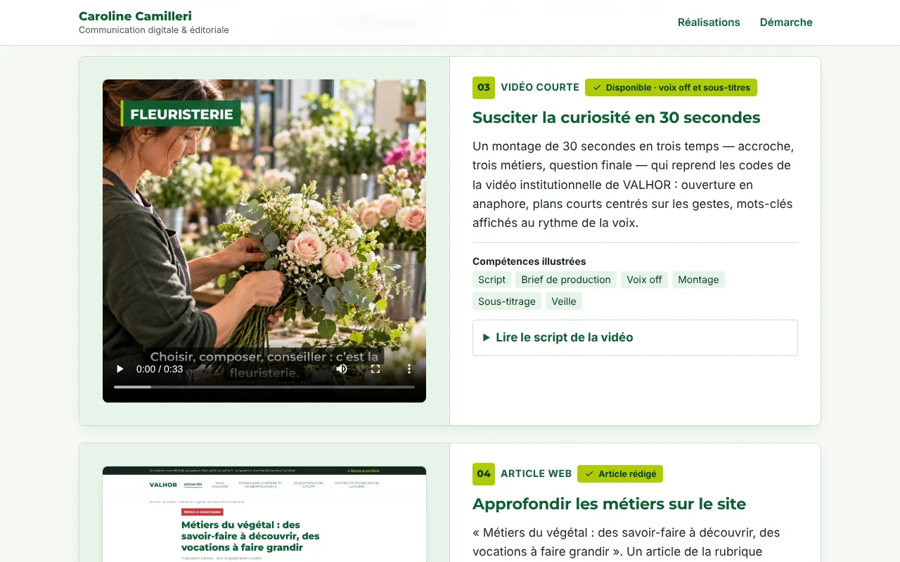

Univers VALHOR · étude exploratoire
Végétal : campagne multicanale sur trois métiers
Faire découvrir l'horticulture, la fleuristerie et le paysage aux personnes en orientation ou en reconversion.
- Un message décliné en 5 réalisations : carrousel LinkedIn, newsletter VALHOR Info, vidéo de 33 s, article web, plan de diffusion.
- Vidéo montée par script, avec voix off et sous-titres, et fiche de production prête pour un prestataire.
- Newsletter codée comme un vrai e-mail (600 px, adaptée au mobile), article dans un gabarit de site d'actualité.
- Calendrier de diffusion sur deux semaines et indicateurs par canal.
